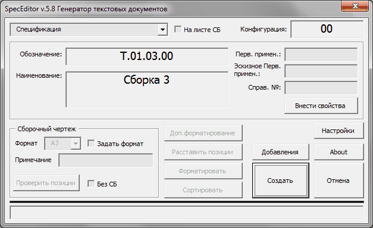
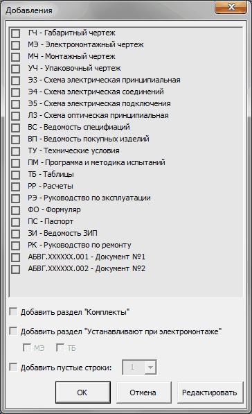
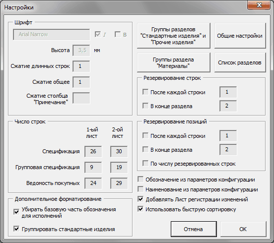
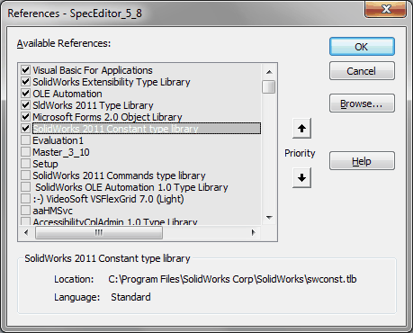

Макрос SpecEditor |
Top Previous Next |
|
Предназначен для генерации текстовых конструкторских документов. В настоящий момент поддерживается простая и групповая спецификации (по типу Б) и ведомость покупных. Спецификации и ВП создаются на листах чертежа. Таблица спецификации основана на встроенной спецификации SW и сохраняет связи со свойствами моделей и позициями сборочного чертежа. Если после создания спецификации сборка или ее компоненты редактировались, то порядок сортировки спецификации может быть нарушен. Чтобы восстановить спецификацию необходимо повторно запустить макрос и отсортировать спецификацию. Повторная сортировка требуется также после ручного добавления строк и разделов. Для создания ВП необходимо создать отдельный файл чертежа (формат листа не важен) и вставить в него один вид сборки. ВП будет создана на отдельном листе и первый лист после запроса будет удален.
 qВыпадающий список позволяет выбрать, какой из 3-х типов документов будет создан. qОбозначение - Обозначение сборки. qНаименование - Наименование сборки qСборочный чертеж oФормат - формат сборочного чертежа для строки Сборочный чертеж раздела Документация. Доступность определяется флажком Задать формат и установкой проверки формата из общих настроек. oЗадать формат - При установленном флажке формат задается вручную. При снятом формат считывается из чертежа. Если проверка формата не выбрана, то флажок всегда установлен и недоступен для изменения. oПримечание - примечание для строки Сборочный чертеж раздела Документация. В случае если в поле Формат стоит *), то поле не доступно и в нем отображается формат\форматы. oПроверить позиции - поиск пропущенных и дублированных позиций на листах сборочного чертежа. oБез СБ - отключает строку "Сборочный чертеж" в разделе Документация. qНа листе СБ - помещает спецификацию на лист сборочного чертежа. qКонфигурация - отображается имя конфигурации сборки, для которой создается спецификация или ВП. qПерв. примен. - первичное применение для спецификации. qЭскизное Перв. примен. - поле для хранения эскизного первичного применения для спецификации. qСправ. № - справочный номер для спецификации. qВнести свойства - вносит в свойства модели значения первичного применения, эскизного первичного применения и справочного номера. qДоп. форматирование - Лучше не использовать. В зависимоти от выбранных в окне Настройки опций происходит дополнительное форматирование таблицы. Изменения могут привести к изменению свойств и невозможности дальнейшей сортировки. Замены значений свойств не произойдет, если в значении свойства содержиться какое-либо стандартное поле, например SW-File Name, или до форматирования разорвана связь ячеек со свойствами с сохранением данной опции по умолчанию (двойной щелчек на пустой ячейке, галочка Болше не спрашивать, да. К сожалению, действует только на одну сессию SW). qРасставить позиции - для созданной спецификации заново проставляются позиции (можно использовать при нарушеннии порядка позиций после ручной правки таблицы). qФорматировать - для созданной спецификации форматирование таблицы без сортировки. qСортировать - сортировка созданной таблицы. Все изменения, внесенные ранее в готовую таблицу, сохраняются. qСоздать - создание спецификации заново. Ранее созданная спецификация удаляется. qОтмена - закрытие окна макроса. qДобавления - вызывает окно Добавления (см. ниже). Позволяет добавить в раздел Документация графы, которые отражают полный комплект документации на сборку.

oДобавить раздел Комплекты - добавляет раздел "Комплекты". oДобавить раздел "Устанавливают при электромонтаже" - добавляет раздел "Устанавливают при электромонтаже". oМЭ - добавляет раздел "Устанавливают по АБВГ.ХХХХХХ.ХХХМЭ". oТБ - добавляет раздел "Устанавливают по АБВГ.ХХХХХХ.ХХХТБ". oДобавить пустые строки - добавляет пустые строки в конце спецификации. oРедактировать - позволяет редактировать файл \SpecEditor\SpecEditor_Doc.txt со списком документов для добавления. Отредактированные добавления будут отображены после перезапуска макроса. Если в начале строки стоит знак "+", то в качестве Обозначения будет взят указанный текст, а не обозначение спецификации (см. две последнии строки). oОК - выход с сохранением изменений oОтмена - выход без сохранения изменений
qНастройки - вызывает окно настроек (см. ниже)

Настройки сохраняются в файле SpecEditor\SpecEditor.ini.
qШрифт - параметры шрифта, которые будут применены к таблице спецификации. Параметры шрифта недоступны, если в меню Общие настройки задана Проверка оформления. В этом случае основные параметры шрифта (кроме сжатия) определяются файлом стандарта MyStandard.sldstd в папке SpecEditor. oСжатие длинных строк - устанавливается коэффициент сжатия\расширения для длинных записей. Если параметр дробный, то число записывается через ЗАПЯТУЮ. Параметр также доступен для редактирования в файле SpecEditor.ini, находится в 6-ой сверху строке. oСжатие общее - устанавливается коэффициент сжатия\расширения для строк всей спецификации. Если параметр дробный, то число записывается через ЗАПЯТУЮ. Параметр также доступен для редактирования в файле SpecEditor.ini, находится в 5-ой сверху строке. qГруппы разделов "Стандартные изделия" и "Прочие изделия" - редактирование файла SpecEditor\SpecEditor_Groups.txt со списком групп разделов "Стандартные изделия" и "Прочие изделия". qГруппы раздела "Материалы" - редактирование файла SpecEditor\SpecEditor_MaterialGroups.txt со списком групп раздела "Материалы". qОбщие настройки - вызов окна Общие настройки (см. пункт Установка и настройка) qСписок разделов - редактирование файла SpecEditor\SpecEditor_Sections.txt со списком разделов спецификации. qОбозначение из параметров конфигурации - в графу обозначение будут вноситься данные из параметров конфигурации. qНаименование из параметров конфигурации - в графу наименование будут вноситься данные из параметров конфигурации. qДобавлять лист регистрации изменений - добавляется ЛРИ при числе страниц 3 и более. qИспользовать быструю сортировку - включение альтернативного алгоритма сортировки. Работает быстрее. qЧисло строк - число строк для разных типов спецификаций для первого и последующих листов. qРезервирование строк oПосле каждой строки - количество пустых строк после каждой строки спецификации. oВ конце раздела - количество пустых строк после каждого раздела спецификации. oПо числу резервированных строк - режим, отменяющий две предыдущие настройки. Позиции пропускаются в зависимости от пропуска строк. qРезервирование позиций oПосле каждой строки - количество пропущенных позиций после каждой строки спецификации. oВ конце раздела - количество пропущенных позиций после каждого раздела спецификации. qДополнительное форматирование - действия, выполняемые при нажатии кнопки Доп. форматирование. oУбирать базовую часть обозначения для исполнений - заменяет обозначения типа АБВГ.ХХХХХХ.ХХХ-01 на -01. Внимание! Может быть изменено соответствующее свойство! oГруппировать стандартные изделия - группировка строк с одинаковым ГОСТом в разделе Стандартные изделия. Внимание! Может быть изменено соответствующее свойство! qОк - сохранение изменений в ini файл. qОтмена - выход без сохранения изменений.
Библиотеки:  |